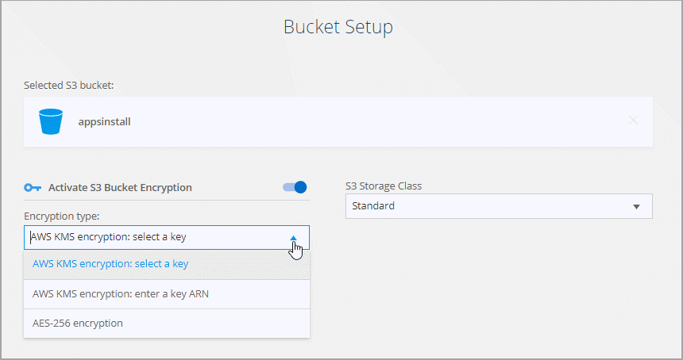

版本資訊
版本資訊
建立同步關係
 建議變更
建議變更
建立同步關係時、 BlueXP 複製與同步服務會將檔案從來源複製到目標。初始複本之後、服務會每 24 小時同步所有變更的資料。
在建立某些類型的同步關係之前、您首先需要在BlueXP中建立工作環境。
針對特定類型的工作環境建立同步關係
如果您想為下列任一項目建立同步關係、則首先需要建立或探索工作環境：
-
Amazon FSX for ONTAP Sf
-
Azure NetApp Files
-
Cloud Volumes ONTAP
-
內部 ONTAP 部署的叢集
-
建立或探索工作環境。
-
選取 * Canvas * 。
-
選取符合上述任一類型的工作環境。
-
選取同步旁邊的動作功能表。

-
選擇*從此位置同步資料*或*同步資料至此位置*、然後依照提示設定同步關係。
建立其他類型的同步關係
請使用這些步驟、將資料同步至或從Amazon FSX以外的支援儲存類型、以利ONTAP 進行支援的資料、以利進行邊、Azure NetApp Files 邊、Cloud Volumes ONTAP 邊、邊ONTAP 等的資料叢集。下列步驟提供範例、說明如何設定從 NFS 伺服器到 S3 儲存區的同步關係。
-
在 BlueXP 中、選取 * 同步 * 。
-
在「 * 定義同步關係 * 」頁面上、選擇來源和目標。
下列步驟提供範例、說明如何從 NFS 伺服器建立至 S3 儲存區的同步關係。

-
在「 * NFS 伺服器 * 」頁面上、輸入您要同步到 AWS 的 NFS 伺服器 IP 位址或完整網域名稱。
-
在*資料代理人群組*頁面上、依照提示在AWS、Azure或Google Cloud Platform中建立資料代理人虛擬機器、或是在現有的Linux主機上安裝資料代理人軟體。
如需詳細資料、請參閱下列頁面：
-
安裝資料代理程式後、請選取 * 繼續 * 。

-
[[FIL篩選 器 ] 在 * 目錄 * 頁面上、選取最上層目錄或子目錄。
如果 BlueXP 複本與同步無法擷取匯出、請選取 * 手動新增匯出 * 、然後輸入 NFS 匯出的名稱。

如果您想要同步 NFS 伺服器上的多個目錄、則必須在完成之後建立其他同步關係。 -
在「 * AWS S3 Bucket * 」頁面上、選取一個儲存區：
-
向下切入以選取儲存區內現有的資料夾、或選取您在儲存區內建立的新資料夾。
-
選取 * 新增至清單 * 以選取與 AWS 帳戶無關的 S3 儲存區。 "必須將特定權限套用至 S3 儲存區"。
-
-
在 * 庫位設定 * 頁面上、設定庫位：
-
選擇是否啟用 S3 儲存區加密、然後選取 AWS KMS 金鑰、輸入 KMS 金鑰的 ARN 、或選取 AES-256 加密。
-
選取 S3 儲存類別。 "檢視支援的儲存類別"。

-
-
[[Settings]在*設定*頁面上、定義如何在目標位置同步及維護來源檔案與資料夾：
- 排程
-
選擇週期性排程以供未來同步或關閉同步排程。您可以排程關係、每 1 分鐘同步一次資料。
- 同步逾時
-
定義如果同步未在指定的分鐘數、小時數或天數內完成、 BlueXP 複製與同步是否應取消資料同步。
- 通知
-
可讓您選擇是否在 BlueXP 的通知中心接收 BlueXP 複本與同步通知。您可以啟用通知、以便成功同步資料、同步失敗資料及取消資料同步。
- 重試次數
-
定義 BlueXP 複製與同步作業在略過檔案之前、應重試同步檔案的次數。
- 持續同步
-
初始資料同步之後、 BlueXP 複製與同步會偵聽來源 S3 儲存區或 Google Cloud Storage 儲存區上的變更、並在變更發生時持續同步目標。不需要以排定的時間間隔重新掃描來源。
此設定僅適用於建立同步關係、以及將S3儲存區或Google Cloud Storage的資料同步至Azure Blob儲存設備、CIFS、Google Cloud Storage、IBM Cloud Object Storage、NFS、S3、 及從Azure Blob儲存設備到Azure Blob儲存設備、CIFS、Google Cloud Storage、IBM Cloud Object Storage、NFS和整套功能的StorageGRID StorageGRID
如果啟用此設定、則會影響其他功能、如下所示：
-
同步排程已停用。
-
下列設定會還原為預設值：同步逾時、最近修改的檔案及修改日期。
-
如果S3為來源、則依大小篩選只會在複製事件上作用（而非刪除事件）。
-
建立關係之後、您只能加速或刪除關係。您無法中止同步、修改設定或檢視報告。
您可以建立與外部貯體的持續同步關係。若要這麼做、請遵循下列步驟：
-
前往 Google Cloud 主控台、以瞭解外部儲存庫的專案。
-
前往 * 雲端儲存 > 設定 > 雲端儲存服務帳戶 * 。
-
更新 local.json 檔案：
{ "protocols": { "gcp": { "storage-account-email": <storage account email> } } } -
重新啟動資料代理程式：
-
Sudo PM2 全部停止
-
Sudo PM2 全部啟動
-
-
與相關的外部貯體建立持續同步關係。
用於與外部儲存庫建立持續同步關係的資料代理人、將無法在其專案中建立與儲存庫的另一個持續同步關係。
-
-
- 比較依據
-
選擇 BlueXP 複本與同步是否應比較某些屬性、以判斷檔案或目錄是否已變更、是否應重新同步。
即使您取消勾選這些屬性、 BlueXP 複製與同步仍會檢查路徑、檔案大小和檔案名稱、以比較來源與目標。如果有任何變更、就會同步這些檔案和目錄。
您可以選擇啟用或停用 BlueXP 複本與同步、以比較下列屬性：
-
* mtime*：檔案的上次修改時間。此屬性對目錄無效。
-
* uid*、* gid*和* mode*：Linux的權限旗標。
-
- 物件複本
-
啟用此選項可複製物件儲存中繼資料和標記。如果使用者變更來源的中繼資料、 BlueXP 複本與同步會在下一次同步時複製此物件、但如果使用者變更來源上的標記（而非資料本身）、 BlueXP 複製與同步就不會在下一次同步中複製物件。
建立關聯之後、您無法編輯此選項。
支援複製標記的同步關係包括Azure Blob或S3相容端點（S3、StorageGRID 支援、或IBM Cloud Object Storage）作為目標。
下列任一端點之間的「雲端對雲端」關係均支援複製中繼資料：
-
AWS S3
-
Azure Blob
-
Google Cloud Storage
-
IBM Cloud 物件儲存設備
-
StorageGRID
-
- 最近修改的檔案
-
選擇排除最近在排程同步之前修改的檔案。
- 刪除來源上的檔案
-
選擇在 BlueXP 複製後從來源位置刪除檔案、然後同步將檔案複製到目標位置。此選項包括資料遺失的風險、因為來源檔案在複製後會被刪除。
如果啟用此選項、您也需要變更資料代理程式上 local.json 檔案中的參數。開啟檔案並更新如下：
{ "workers":{ "transferrer":{ "delete-on-source": true } } }更新 local.json 檔案之後、您應該重新啟動：
pm2 restart all。 - 刪除目標上的檔案
-
如果檔案已從來源中刪除、請選擇從目標位置刪除。預設值是永遠不要從目標位置刪除檔案。
- 檔案類型
-
定義要包含在每個同步中的檔案類型：檔案、目錄、符號連結和硬式連結。
硬式連結僅適用於不安全的 NFS 與 NFS 關係。使用者只能使用一個掃描器程序和一個掃描器並行處理、而且必須從根目錄執行掃描。 - 排除檔案副檔名
-
輸入副檔名並按下 Enter ，指定要從同步中排除的 regex 或副檔名。例如、輸入 log 或 .log 以排除 * 。 log 檔案。多個副檔名不需要分隔符號。以下影片提供簡短示範：
regex 或規則運算式與萬用字元或 globb 運算式不同。此功能 * 僅 * 適用於 regex 。 - 排除目錄
-
輸入名稱或目錄完整路徑並按 Enter ，指定最多 15 個 regex 或目錄，以從同步中排除。根據預設、.copy卸載、.snapshot、~snapshot目錄都會排除。
regex 或規則運算式與萬用字元或 globb 運算式不同。此功能 * 僅 * 適用於 regex 。 - 檔案大小
-
無論檔案大小為何、或只是特定大小範圍內的檔案、都可以選擇同步所有檔案。
- 修改日期
-
無論檔案上次修改日期、在特定日期之後修改的檔案、在特定日期之前修改的檔案、或是在某個時間範圍之間、都要選擇所有檔案。
- 建立日期
-
當SMB伺服器為來源時、此設定可讓您同步處理在特定日期之後、特定日期之前或特定時間範圍之間建立的檔案。
- ACL -存取控制清單
-
只從 SMB 伺服器複製 ACL 、僅複製檔案、或從 SMB 伺服器複製 ACL 和檔案、方法是在建立關聯或建立關聯後啟用設定。
-
在「標記/中繼資料」頁面上、選擇是否要將金鑰值配對另存為標記、以便傳輸至S3儲存區的所有檔案、或是在所有檔案上指派中繼資料金鑰值配對。


將資料同步至StorageGRID 物件儲存設備時、也可使用此功能。對於Azure和Google Cloud Storage、只有中繼資料選項可用。 -
檢閱同步關係的詳細資料、然後選取 * 建立關係 * 。
-
結果 *
-
BlueXP 複製與同步會開始在來源與目標之間同步資料。
從 BlueXP 分類建立同步關係
BlueXP 複本與同步已與 BlueXP 分類整合。在 BlueXP 分類中、您可以使用 BlueXP 複本與同步功能、選取要同步至目標位置的來源檔案。
從 BlueXP 分類啟動資料同步之後、所有來源資訊都會包含在單一步驟中、只需要輸入幾個關鍵詳細資料。然後選擇新同步關係的目標位置。